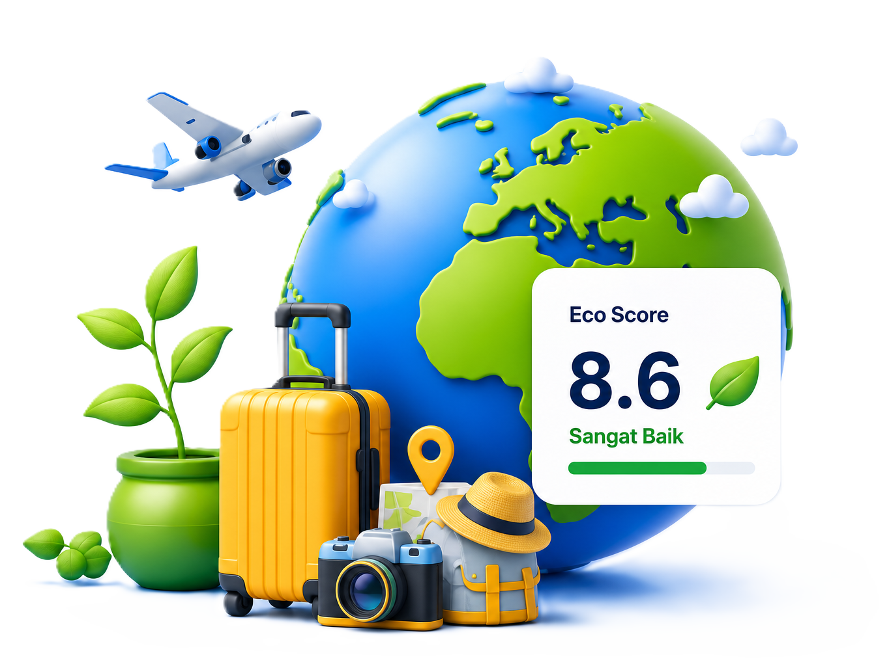

8.2
8.2
Raja Ampat
Papua Barat
AlamSustago membantu wisatawan menemukan destinasi dengan Eco-Score transparan, mendukung UMKM lokal, dan mengubah ulasan perjalanan menjadi data keberlanjutan yang dapat dipantau.

Destinasi atau aktivitas

500+
Destinasi Eco

1200+
UMKM Lokal

20K+
Pengguna Aktif

20 Ton
CO2 Terkurangi
Masalah besar yang ingin kita ubah bersama.
Sulit membedakan destinasi yang benar-benar berkelanjutan.
Dana wisata sering keluar dari daerah, UMKM lokal mendapat manfaat minim.
Pengelola butuh data akurat untuk perbaikan berkelanjutan.
Temukan destinasi dengan Eco-Score transparan.
Pilih produk, kuliner, dan layanan lokal di sekitar destinasi.
Bagikan pengalaman dan nilai dampak lingkungan & sosial.
Feedback diolah jadi insight untuk pengelola & pemerintah.
8.2
Papua Barat
Alam 8.6
8.6
Jawa Tengah
Budaya 8.6
8.6
Bali
Alam & Budaya
8.4
NTT
Alam
8.1
Yogyakarta
Komunitas
Minuman
Labuan Bajo
Penginapan
Bali
Kerajinan
Sumba
Aktivitas
Raja Ampat
2 hari yang lalu
8.4
Pengalaman luar biasa. Masyarakat lokal sangat ramah, lingkungan terjaga bersih, dan banyak edukasi tentang konservasi laut.
CO2 Terkurangi
UMKM Terbantu
Eco Rating Terkumpul
Destinasi Terpantau
14 Mei 2026 Edukasi
14 Mei 2026 Panduan
10 Mei 2026 UMKM
8 Mei 2026 Eco Score
Eco Score adalah skor keberlanjutan destinasi berdasarkan indikator lingkungan, sosial, ekonomi lokal, dan ECO Rating pengguna.
Pilih destinasi dari Eco Explorer, bandingkan skor dan UMKM sekitar, lalu lanjutkan ke paket perjalanan yang tersedia.
Setelah perjalanan selesai, pengguna mengisi ulasan multi-kriteria tentang kebersihan, sampah, akses, komunitas, dan pengalaman edukasi.
Sustago dapat mendukung transfer bank, e-wallet, kartu debit/kredit, dan metode pembayaran digital lain sesuai integrasi platform.
Fokus awal Sustago adalah destinasi Indonesia, terutama wisata alam, budaya, dan komunitas lokal yang memiliki indikator keberlanjutan.
Ulasan diproses sebagai data agregat untuk memperbarui Eco Score dan membantu pengelola memantau kualitas destinasi.